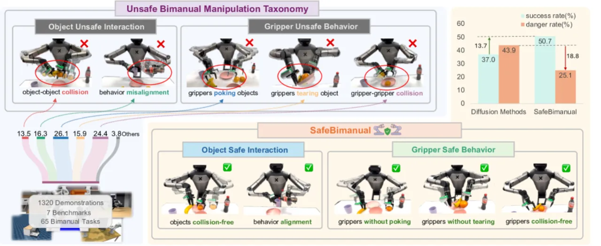
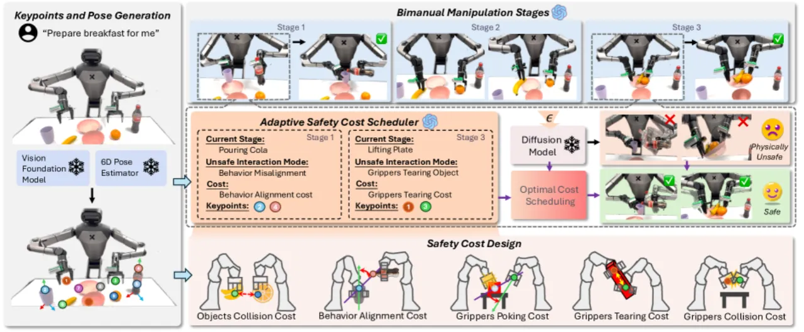
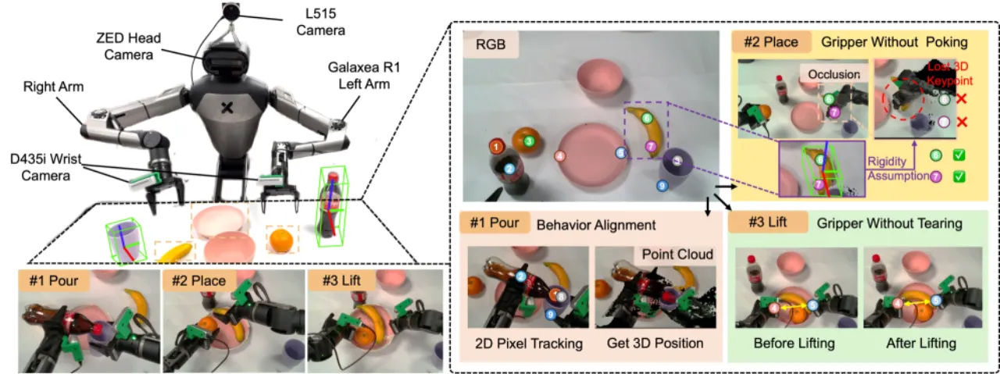
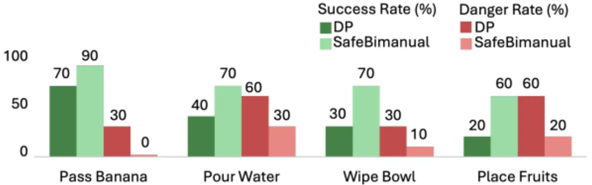

给任意预训练的双臂扩散策略加一个即插即用的测试期（test-time）轨迹优化外壳：把物理安全约束写成可微代价函数，在扩散去噪采样中做梯度引导（cost-guided sampling），并由一个 VLM 根据任务阶段动态调度该激活哪些约束——在提升成功率的同时显著减少撕扯物体、机械臂互撞等危险行为。
双臂操作在家庭服务与制造中广泛应用，近期基于 diffusion 的策略在建模动作分布上表现出色。但这些策略忽视了双臂操作的物理安全约束：两臂协作时容易出现撕扯物体、机械臂/夹爪互相碰撞、戳穿物体等危险行为，损坏机器人与物体，同时也拉低成功率。
"they ignored the physical safety constraints of bimanual manipulation, which leads to the dangerous behaviors with damage to robots and objects."
作者先对危险行为做了一次系统梳理：在 65 个双臂任务、1320 条示范上统计，超过 96.2% 的不安全交互都落入两大类五小类——物体级（object-level）：object-object collision、behavior misalignment；夹爪级（gripper-level）：gripper poking、gripper tearing、gripper-gripper collision。这一 taxonomy 正是后续代价函数设计的依据。

SafeBimanual 不改动、不重训底层策略，而是在去噪采样过程中注入安全性。核心三件事：（1）把每类危险行为写成一个可微的 safety cost function；（2）在 diffusion denoising 的最后若干步用代价梯度引导轨迹（cost-guided sampling）；（3）用 VLM 自适应代价调度器按任务阶段决定激活哪些代价、绑定哪些关键点。

在标准 diffusion 采样的每一步去噪均值 μ 上，叠加一个沿安全代价负梯度的修正项：
Aₜᵏ⁻¹ = μ(Aₜᵏ, Oₜ, k) − ρₖ ∇_Aᵏ 𝒞_sched(A₀|ₖ, 𝒫, sₜ) + σₖ ε
其中 𝒞_sched 是被调度器激活的代价之和，𝒫 为关键点集合，sₜ 为当前任务阶段。为在"探索动作分布"与"满足安全"之间平衡，引导只施加在最后 M 步（M = 0.3K）去噪上，避免过早破坏策略学到的动作先验。
按 taxonomy 一一对应，全部可微：
用 GPT-4o + chain-of-thought：给定观测、关键点与任务阶段，先从预定义 taxonomy 中识别当前的不安全交互模式，再以二值 mask 激活相应代价项，并抽取关系关键点——物体表面点由 ReKeP 提出，夹爪指尖由 forward kinematics 得到，物体中心由 Omni6DPose 估计。由此，整个双臂操作过程中"最优的安全约束"是逐阶段动态生成的，而非全程固定权重。

在 RoboTwin 的 8 项双臂仿真任务上，把 SafeBimanual 分别套在 DP、DP3、RDT-1b 等预训练 diffusion 策略上；指标为 success rate (SR) 与 danger rate (DR，越低越安全)。整体上，SafeBimanual 带来 +13.7% SR 与 −18.8% 不安全交互（相对 SOTA diffusion 方法）。
| Base policy（8 任务均值） | SR 原始 | SR + SafeBimanual | DR 原始 | DR + SafeBimanual |
|---|---|---|---|---|
| DP | 20.7% | 36.0% | 45.6% | 20.9% |
| DP3 | 53.9% | 67.3% | 35.3% | 19.1% |
| RDT-1b | 36.4% | 48.9% | 50.8% | 35.3% |
典型单任务（verbatim）：Dual Bottles Pick (Easy) 上 DP 从 33%→46% SR、23%→9% DR；Pour Water 上 DP3 从 79%→89% SR、21%→11% DR；Pick Apple Handover 上 DP3 从 82%→94% SR、18%→3% DR。
在真人形机器人 Galaxea R1 上测 4 项家庭任务（Pass Banana / Pour Water / Wipe Bowl / Place Fruits），相比基线 diffusion policy 成功率提升 32.5%，作者归因于"enhances object-level generalization and reduces compounding errors over extended sequences"。长程 "Prepare Breakfast" 基准同时涵盖全部五种不安全模式，SafeBimanual 也能协调完成多阶段操作。

逐项 leave-one-out 表明每个代价都有贡献，其中 VLM 调度 + CoT 推理是关键：完整模型 SR 35.5% / DR 19.8%；去掉 VLM 改用固定权重跌至 SR 19.4% / DR 42.5%；有 VLM 但无 CoT也仅 SR 25.6% / DR 36.9%。单去某一代价项时，去掉 C₃ Gripper Poking 影响最大（SR 25.0% / DR 37.5%）。
| Ablation | Avg SR | Avg DR |
|---|---|---|
| w/o C₁ Objects Collision | 31.8% | 24.4% |
| w/o C₂ Behavior Alignment | 33.8% | 23.1% |
| w/o C₃ Gripper Poking | 25.0% | 37.5% |
| w/o C₄ Gripper Tearing | 33.1% | 21.3% |
| w/o C₅ Gripper Collision | 30.0% | 24.4% |
| w/o VLM（固定权重） | 19.4% | 42.5% |
| w/ VLM w/o CoT | 25.6% | 36.9% |
| SafeBimanual（full） | 35.5% | 19.8% |
"SafeBimanual does not guarantee complete safety under all conditions. In extreme or highly cluttered environments, residual unsafe behaviors may still occur."
方法针对物理安全，对"语义任务失败（如执行顺序错误）"帮助有限——"Less effective in addressing semantic task failures, such as incorrect execution order."
约束建立在视觉关键点与估计位姿之上，会受遮挡与噪声影响（"suffers from occlusion and noise"）。
"Quality of constraint scheduling depends on the reasoning ability of the vision-language model (VLM)"；在折叠等主观任务中，VLM 可能漏掉与人类偏好对齐的细粒度步骤。